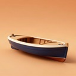
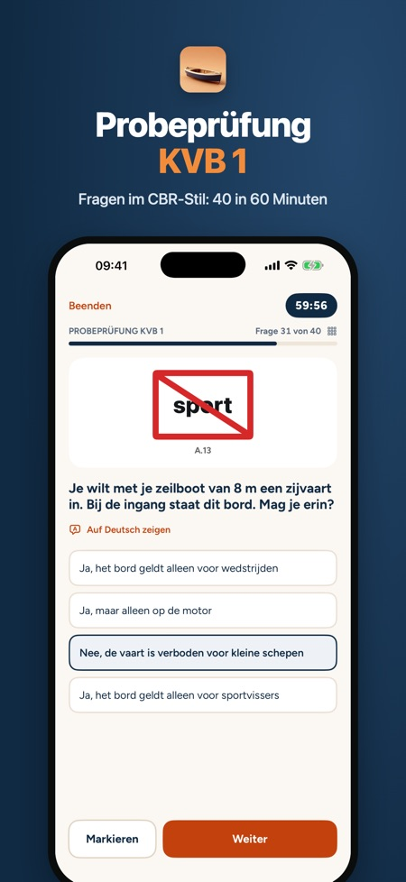
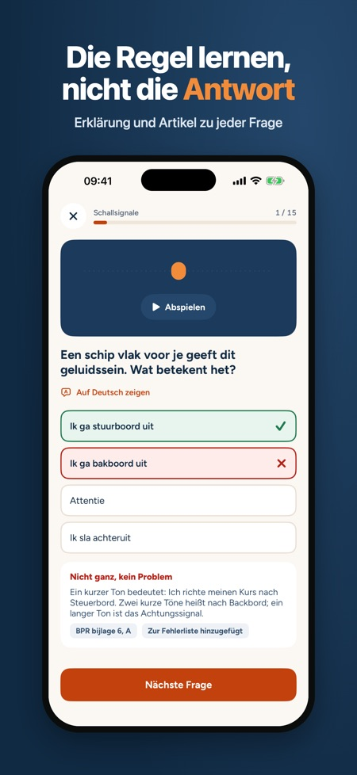
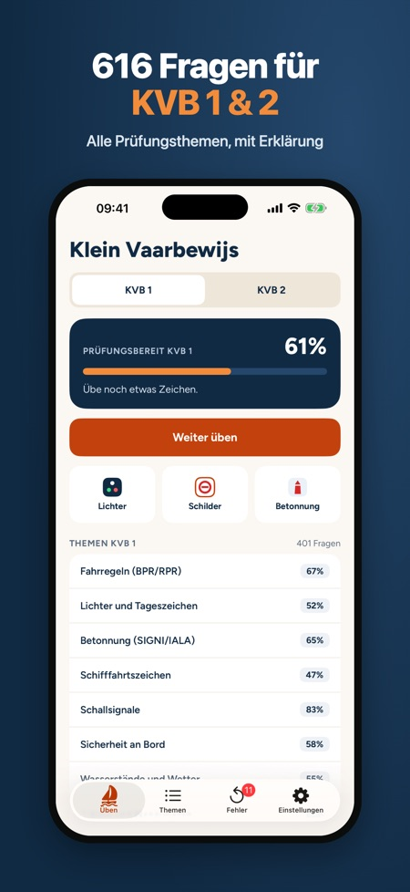

Bootsführerschein Niederlande. Übe 2026 für KVB 1 und 2: 616 eigene Fragen im CBR-Stil mit Erklärung. Probeprüfungen im Prüfungsformat, Lichter- und Schilderkarten, Schallsignale.



Bereite dich auf den niederländischen Bootsführerschein Klein Vaarbewijs 1 oder 2 vor, in kurzen Runden, wo immer du bist. Du siehst sofort, was richtig oder falsch ist, mit einer Erklärung zu jeder Frage.
Die Fragen sind auf Niederländisch, wie in der Prüfung. Zu jeder Frage gibt es eine deutsche Übersetzung, und alle Erklärungen gibt es auf Deutsch.
DAS BEKOMMST DU
• 616 eigene Übungsfragen zu allen Prüfungsthemen von KVB 1 und KVB 2
• Eine Erklärung zu jeder Frage; bei Fahrregeln, Lichtern, Schildern und Schallsignalen mit dem Artikel aus BPR, RPR oder SRW
• Probeprüfungen mit Zeit und Punktewertung im Prüfungsformat: KVB 1 mit 40 Fragen in 60 Minuten, KVB 2 mit 27 Fragen in 90 Minuten, inklusive offener Rechenfragen
• Lichterkarten: Lichterführung von vorn, achtern und seitlich, dazu Tageszeichen
• Schifffahrtszeichen, Betonnung (SIGNI und IALA) und Schallsignale zum Abspielen
• Kartenlesen, Gezeiten und Kursberechnung für KVB 2, mit Übungskarten
• Fehlerliste: Eine Frage verschwindet erst nach zwei richtigen Antworten in Folge
• Prüfungsbereitschaft in Prozent, Prüfungsdatum und tägliche Erinnerung
EINMAL ZAHLEN
Die Fahrregeln (BPR/RPR) und eine Probeprüfung kannst du ohne Kauf üben. Mit einem Kauf schaltest du alles für KVB 1 und KVB 2 frei. Kein Abo, kein Konto, keine Werbung. Funktioniert offline.
GUT ZU WISSEN
Die Fragen sind für diese App auf Grundlage der öffentlichen Vorschriften geschrieben. Diese App ist nicht mit dem CBR verbunden. Die aktuellen Prüfungsanforderungen findest du auf der Website des CBR.